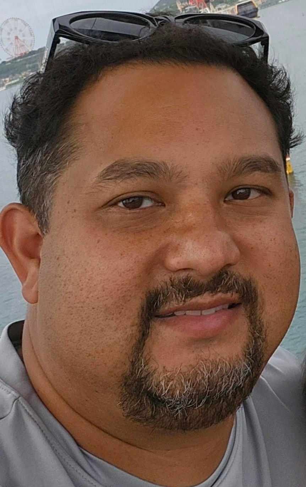

Andre Asbury
Life Master · Two-time USA junior international · Teaching bridge since 2006

I'm Andre. I've been playing bridge since I was a kid, earned Life Master at 17, and represented the USA twice at junior internationals. I have been an ACBL-certified teacher since 2006.
This site exists to help parents and kids find out when youth bridge classes and events are being held, and to give them an easy way to sign up. I wanted one place parents could check on their phone.
My day job is as an electrical engineer but bridge is one of my big passions. If you'd like your kid involved and don't see an event that fits, email me — I'll try to point you somewhere useful, or tell you when the next opportunity opens up. You can reach me at aaasbury @ gmail.com or by phone at 229-834-1186.
Contact: use any of the event sign-up forms and I'll get in touch. For general questions, the directory form is fine too.